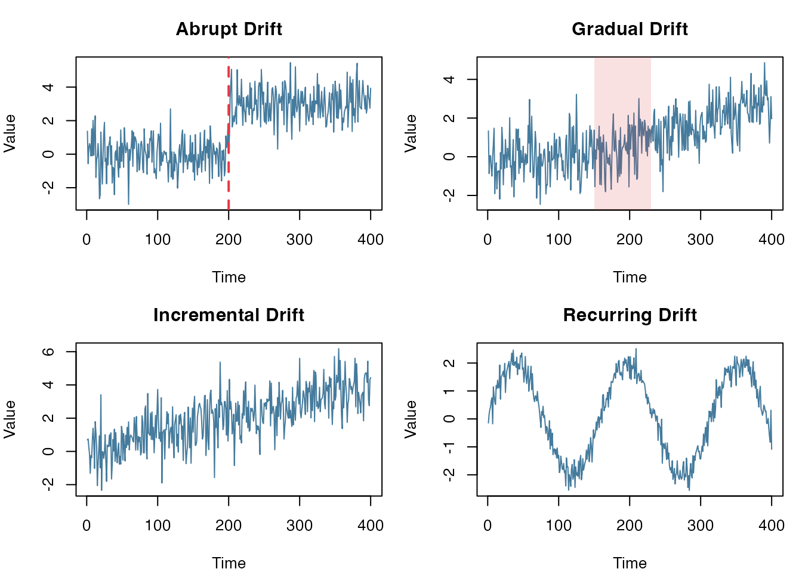
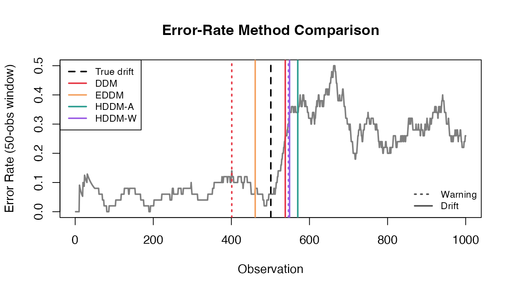
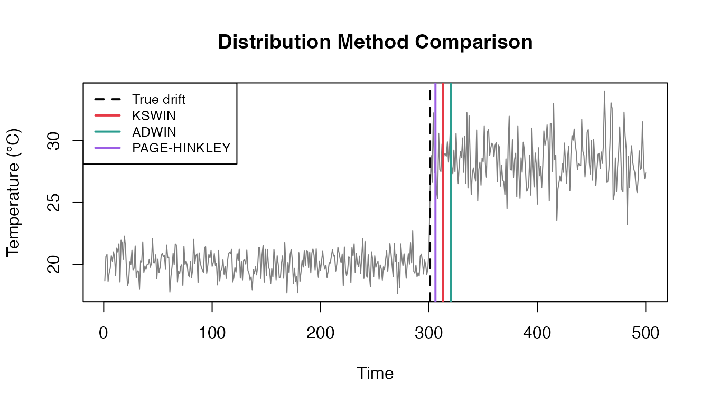
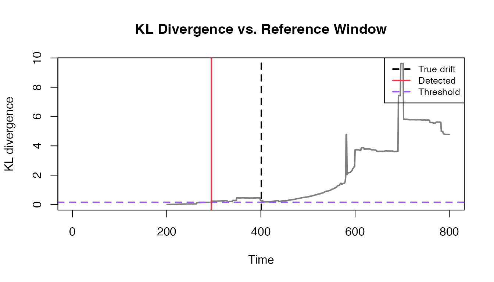
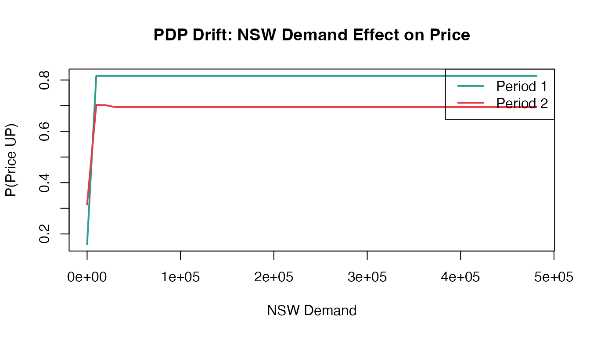

Introduction
In production, the data generating process rarely stays still. Seasonality, product changes, user behavior, and policy updates can shift the distribution of your features—and sometimes even change the relationship between features and the target.
Example (concept drift): You train a model to predict whether electricity prices will go up based on demand and price signals. After a market reform, the same demand level can imply a different price movement. In practice this often shows up as a rising error rate or shifting model outputs.
datadriftR helps you detect these shifts early in streaming settings, so you can trigger investigation, retraining, or alerts.
Drift Taxonomy
Many “drift” problems are forms of dataset shift:
\[P_{train}(X, Y) \neq P_{prod}(X, Y)\]
What changed?
- Covariate shift: \(P(X)\) changes while \(P(Y|X)\) stays roughly the same.
- Concept drift: \(P(Y|X)\) changes (the mapping from inputs to outputs changes).
Drift Patterns
Drift can also differ by how it unfolds over time:
- Abrupt: change happens at once (deployments, outages, policy changes)
- Gradual: mixture of old/new concepts (slow adoption, rollout)
- Incremental: continuously moving distribution (wear-and-tear, trend)
- Recurring: seasonal or cyclical patterns (day/night, weekdays, holidays)

Common drift patterns
Available Methods
| Method | What you feed |
|---|---|
| DDM, EDDM, HDDM-A/W | Binary (0/1) error stream |
| KSWIN, ADWIN, Page-Hinkley, KL Divergence | Numeric stream (or rolling window/batches) |
| ProfileDifference | Two profiles (e.g., PDPs) |
Quick Start
Quick start with detect_drift():
set.seed(1)
x <- c(rnorm(300, 0, 1), rnorm(200, 3, 1))
detect_drift(x, method = "page_hinkley", delta = 0.05, threshold = 50)
#> index value type
#> 1 315 2.964078 driftPart 1: Error-Rate Detectors (Binary Stream)
These methods monitor a stream of prediction errors:
error_stream <- as.integer(y_pred != y_true)They work well when you can observe labels reasonably quickly (or with a known delay).
Comparing All Error-Rate Methods
error_methods <- c("ddm", "eddm", "hddm_a", "hddm_w")
first_index <- function(res, type) {
idx <- res$index[res$type == type]
if (length(idx) == 0) NA_integer_ else idx[1]
}
error_results <- do.call(rbind, lapply(error_methods, function(m) {
res <- detect_drift(error_stream, method = m, include_warnings = TRUE)
warning_idx <- first_index(res, "warning")
drift_idx <- first_index(res, "drift")
data.frame(
Method = gsub("_", "-", toupper(m)),
Warning = warning_idx,
Drift = drift_idx,
DriftDelay = if (!is.na(drift_idx)) drift_idx - true_drift_error else NA,
stringsAsFactors = FALSE
)
}))
error_results
#> Method Warning Drift DriftDelay
#> 1 DDM 401 538 37
#> 2 EDDM NA 461 -40
#> 3 HDDM-A 548 570 69
#> 4 HDDM-W 546 549 48
Online Processing (Streaming)
ddm <- DDM$new()
drifts <- c()
for (i in seq_along(error_stream)) {
ddm$add_element(error_stream[i])
if (ddm$change_detected) {
drifts <- c(drifts, i)
ddm$reset()
}
}
data.frame(Method = "DDM", True = true_drift_error, Detected = drifts)
#> Method True Detected
#> 1 DDM 501 538The loop above is the “low-level” way to run a detector. For
convenience, detect_drift() provides the same idea as a
single function call:
ddm_res <- detect_drift(error_stream, method = "ddm", include_warnings = FALSE)
ddm_res
#> index value type
#> 1 538 1 driftPart 2: Continuous-Stream Detectors (Numeric Data)
These methods work with any numeric stream—sensor readings, feature values, model predictions.
Comparing All Distribution Methods
dist_methods <- c("kswin", "adwin", "page_hinkley")
dist_results <- do.call(rbind, lapply(dist_methods, function(m) {
res <- detect_drift(sensor_stream, method = m)
data.frame(
Method = gsub("_", "-", toupper(m)),
Detected = if (nrow(res) > 0) res$index[1] else NA,
Delay = if (nrow(res) > 0) res$index[1] - true_drift_sensor else NA,
stringsAsFactors = FALSE
)
}))
dist_results
#> Method Detected Delay
#> 1 KSWIN 313 12
#> 2 ADWIN 320 19
#> 3 PAGE-HINKLEY 306 5
Part 3: KL Divergence
Sometimes you want to compare recent values to a reference window (latency, transaction amount, sensor readings, model scores).
KLDivergence is a simple histogram-based implementation
of Kullback–Leibler divergence. When the divergence crosses a threshold,
it flags drift.
set.seed(789)
n_ref <- 400
n_shift <- 400
latency_ms <- c(
rlnorm(n_ref, meanlog = log(100), sdlog = 0.25),
rlnorm(n_shift, meanlog = log(180), sdlog = 0.30)
)
true_drift_kld <- n_ref + 1
window <- 200
kld <- KLDivergence$new(bins = 30, drift_level = 0.15)
kld$set_initial_distribution(latency_ms[1:window])
kl <- rep(NA_real_, length(latency_ms))
for (t in (window + 1):length(latency_ms)) {
current <- latency_ms[(t - window + 1):t]
kld$add_distribution(current)
kl[t] <- kld$get_kl_result()
}
detected_kld <- which(kl > kld$drift_level)[1]
data.frame(True = true_drift_kld, Detected = detected_kld, Threshold = kld$drift_level)
#> True Detected Threshold
#> 1 401 295 0.15
Part 4: ProfileDifference (Model Behavior)
Partial Dependence Profiles (PDPs) show how a model’s prediction changes with a feature. When concept drift occurs, the relationship between features and target changes—PDPs capture this.
Available Methods
| Method | Description |
|---|---|
| pdi | Profile Disparity Index - compares derivative signs |
| L2 | L2 norm between profiles |
| L2_derivative | L2 norm of profile derivatives |
Example: Electricity Prices (elec2)
The elec2 dataset from the dynaTree package
is a classic benchmark for concept drift—Australian electricity prices
where market dynamics changed over time. This section requires the
optional packages dynaTree and ranger. For
readability we rename x1..x4/y, and for speed
we train on a small subset from each time period.
library(dynaTree)
library(ranger)
elec2_env <- new.env(parent = emptyenv())
data("elec2", package = "dynaTree", envir = elec2_env)
elec2_df <- get("elec2", envir = elec2_env)
stopifnot(is.data.frame(elec2_df))
names(elec2_df) <- c("nswprice", "nswdemand", "vicprice", "vicdemand", "class_raw")
elec2_df$class <- factor(elec2_df$class_raw, levels = c(1, 2), labels = c("DOWN", "UP"))
elec2_df$class_raw <- NULL
split_idx <- floor(nrow(elec2_df) / 2)
period1_data <- elec2_df[1:split_idx, ]
period2_data <- elec2_df[(split_idx + 1):nrow(elec2_df), ]
n_train <- min(2000, nrow(period1_data), nrow(period2_data))
period1_train <- period1_data[1:n_train, ]
period2_train <- period2_data[1:n_train, ]
rf1 <- ranger(class ~ nswprice + nswdemand + vicprice + vicdemand,
data = period1_train, probability = TRUE, num.trees = 200, seed = 1)
rf2 <- ranger(class ~ nswprice + nswdemand + vicprice + vicdemand,
data = period2_train, probability = TRUE, num.trees = 200, seed = 1)
compute_pdp_rf <- function(model, data, var, grid) {
preds <- sapply(grid, function(val) {
newdata <- data
newdata[[var]] <- val
mean(predict(model, newdata)$predictions[, "UP"])
})
list(x = grid, y = preds)
}
demand_grid <- seq(min(elec2_df$nswdemand), max(elec2_df$nswdemand), length.out = 50)
pdp1 <- compute_pdp_rf(rf1, period1_train, "nswdemand", demand_grid)
pdp2 <- compute_pdp_rf(rf2, period2_train, "nswdemand", demand_grid)
Comparing All Methods
# PDI (Profile Disparity Index)
pd_pdi <- ProfileDifference$new(method = "pdi", deriv = "gold")
pd_pdi$set_profiles(pdp1, pdp2)
res_pdi <- pd_pdi$calculate_difference()
# L2 norm
pd_l2 <- ProfileDifference$new(method = "L2")
pd_l2$set_profiles(pdp1, pdp2)
res_l2 <- pd_l2$calculate_difference()
# L2 derivative
pd_l2d <- ProfileDifference$new(method = "L2_derivative")
pd_l2d$set_profiles(pdp1, pdp2)
res_l2d <- pd_l2d$calculate_difference()
data.frame(
Method = c("PDI", "L2", "L2_derivative"),
Distance = round(c(res_pdi$distance, res_l2$distance, res_l2d$distance), 4)
)
#> Method Distance
#> 1 PDI 0.0284
#> 2 L2 84.4088
#> 3 L2_derivative 0.0005Higher distance indicates the model learned different demand-price relationships in each period—concept drift detected.
Quick Reference
| What you monitor | Typical signal | Recommended |
|---|---|---|
| Binary error stream | Sudden or gradual accuracy drop | DDM, EDDM, HDDM-A/W |
| Numeric stream | Feature/sensor/score distribution shift | KSWIN, ADWIN, Page-Hinkley |
| Reference vs. current batch | Periodic samples (e.g., daily latency) | KLDivergence |
| Model behavior profiles | PDP/feature effect changes | ProfileDifference |
References
The drift detection methods implemented in datadriftR are based on established algorithms from the streaming machine learning literature. For Python implementations, see:
- River (riverml.xyz): Online machine learning library with drift detectors
- scikit-multiflow (scikit-multiflow.github.io): Stream learning framework
Source code: github.com/ugurdar/datadriftR